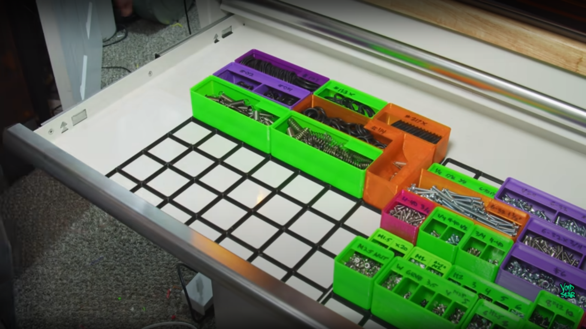
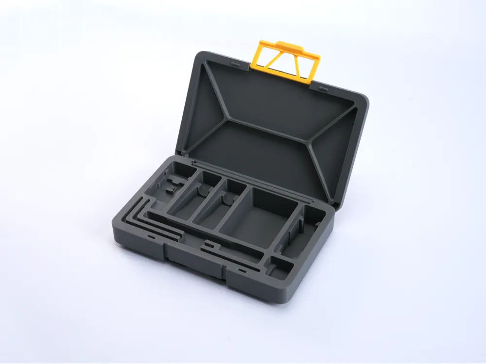

3D Printing Projects
Printing Freedom
One of the most useful parts of 3D printing is being able to create custom objects for organization, repair, decoration, and everyday use. You get to decide what you want to print!


Finding Models
Models can be created manually or downloaded from online model libraries. Before printing, the model should be checked for size, orientation, supports, and printability.
Common Project Ideas
- Gridfinity organizers
- Toolbox organizers
- Phone stand
- Keychains
- Shelving
Project Process
- Choose or design the model.
- Check the model dimensions.
- Slice the model.
- Select filament and print settings.
- Print the object.
- Inspect and finish the print.
Print Suggestion Form
Visitors can use this form to suggest an object that would be interesting to 3D print.